Student: Yahani Perera
Course: CS492
Generative models are a class of machine learning models designed to learn underlying distribution of data and generate new samples that resemble the original dataset. In this project, we learn two types of generative models.: VAE (VAriational Autoencoders) and GAN (Generative Adversarial Networks). The goal is to understand how these models learn to represent and generate data, compare their performance and behavior. In part1, both a basic autoencoder and a VAE are implemented and trained on the MNIST dataset to analyze reconstruction quality and latent space representation. In part 2, a DCGAN (Deep Convolutional GAN) is implemented using a Pokemon image dataset to generate realistic images from random noise. This project experiments are conducted by adjusting latent dimensions, activation functions and other hyperparameters to observe their effects on training stability and output quality. The project highlights the strengths and limitations of each model , showing how VAEs give more structured latent space for sampling, while GANs can generate more realistic outputs.
A fully connected autoencoder was implemented with an encoder that compresses the input image into latent representation and a decoder that reconstructs the image from the latent representation. The main objective was to study how the dimensionality of the latent space affects reconstruction performance and the quality of generated samples. The model was trained on the MNIST dataset using different latent dimensions 2,8 and 32.
Latent Dimension = 2: Epoch [1/10], Loss: 0.2044 Epoch [2/10], Loss: 0.1905 Epoch [3/10], Loss: 0.1831 Epoch [4/10], Loss: 0.1656 Epoch [5/10], Loss: 0.1888 Epoch [6/10], Loss: 0.1807 Epoch [7/10], Loss: 0.1858 Epoch [8/10], Loss: 0.1716 Epoch [9/10], Loss: 0.1732 Epoch [10/10], Loss: 0.1682 Latent Dimension = 8: Epoch [1/10], Loss: 0.1371 Epoch [2/10], Loss: 0.1325 Epoch [3/10], Loss: 0.1231 Epoch [4/10], Loss: 0.1109 Epoch [5/10], Loss: 0.1177 Epoch [6/10], Loss: 0.1169 Epoch [7/10], Loss: 0.1109 Epoch [8/10], Loss: 0.1153 Epoch [9/10], Loss: 0.1128 Epoch [10/10], Loss: 0.1053 Latent Dimension = 32: Epoch [1/10], Loss: 0.1328 Epoch [2/10], Loss: 0.1148 Epoch [3/10], Loss: 0.0977 Epoch [4/10], Loss: 0.0933 Epoch [5/10], Loss: 0.0894 Epoch [6/10], Loss: 0.0852 Epoch [7/10], Loss: 0.0869 Epoch [8/10], Loss: 0.0845 Epoch [9/10], Loss: 0.0826 Epoch [10/10], Loss: 0.0758The model was trained for 10 epochs under different latent space configurations. The loss consistently decreased overtime, indicating stable convergence and successful learning of reconstruction patterns. Latent Dimension = 2: This is a highly compressed representation and the loss is relatively higher. Reconstructed digits are blurry and often incomplete. The model is struggling to preserve fine details. Latent Dimension = 8:Balanced compression and reconstruction quality. Digits are more recognizable. Moderate loss reduction compared to 2D latent space. Latent Dimension = 32: Best reconstruction performance. There is the lowest final loss. The generated outputs closely match the original MNIST match. These results show that increasing latent dimensionality improves reconstruction quality but it reduces compression strength. However, despite good reconstruction performance, the latent space of a basic autoencoder is not continuous or well-structured. As a result, random sampling from the latent space does not reliably produce meaningful digits. This limitation motivates the use of VAEs, which impose a probabilistic structure on the latent space, enabling smoother interpolation and more realistic generation.
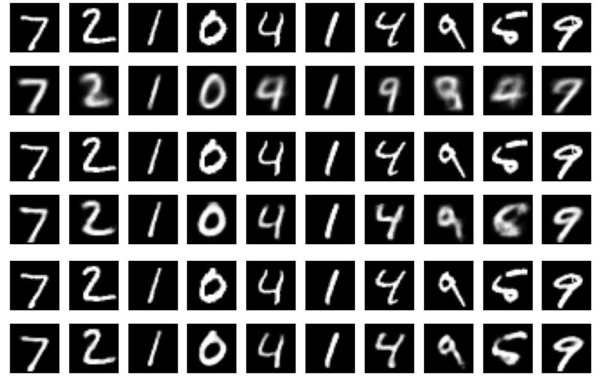
This figure shows images generated by randomly sampling vectors from the latent space of a trained basic autoencoder and passing them through the decoder. The generated outputs are mostly blurry, incomplete, or distorted digits, with only a few faintly resembling recognizable numbers. This indicates that the latent space learned by the autoencoder is not well-structured or continuous. As a result, random samples from this space do not consistently correspond to meaningful handwritten digit representations.
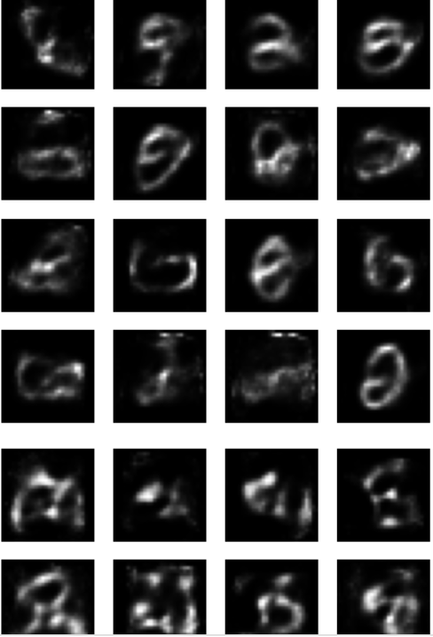
A VAE was implemented to improve upon the limitations of the basic autoencoder. VAE learns a probabilistic latent representation of the input data. The encoder maps the input image to two vectors, mean and variance, which define a Gaussian distribution in the latent space. A latent vector is then sampled from this distribution using the reparameterization. The decoder reconstructs the image from this sampled latent vector. The loss function used to train the model have two components: 1)Reconstruction Loss: measures how well the output matches the input 2) KL DIvergence Loss: regularizes the latent space by forcing it to follow a standard normal distribution.The model was also trained on the MNIST dataset for 10 epochs.
Epoch [1/10] Loss: 16693.7656
Epoch [2/10] Loss: 16297.6387
Epoch [3/10] Loss: 15411.2490
Epoch [4/10] Loss: 15929.5098
Epoch [5/10] Loss: 15819.0645
Epoch [6/10] Loss: 14931.8213
Epoch [7/10] Loss: 15796.4453
Epoch [8/10] Loss: 16015.4297
Epoch [9/10] Loss: 15388.6416
Epoch [10/10] Loss: 14349.2031
The training loss decreased over epochs, showing that the VAE learned both reconstructions and latent space regularization successfully. Loss values are very large compared to the basic autoencoder. It happens because the VAE loss includes both reconstruction error and KL divergence.
Sampling from latent space: random samples were generated by drawing the latent vectors from a standard normal distribution and passing them through the decoder. The generated images showed significant improvement compared to the basic autoencoder. The images were more structured and consistent, the output resembled clear handwritten digits and different samples produced a diverse digit style. This shows that the VAE can generate more meaningful data from random latent vectors .
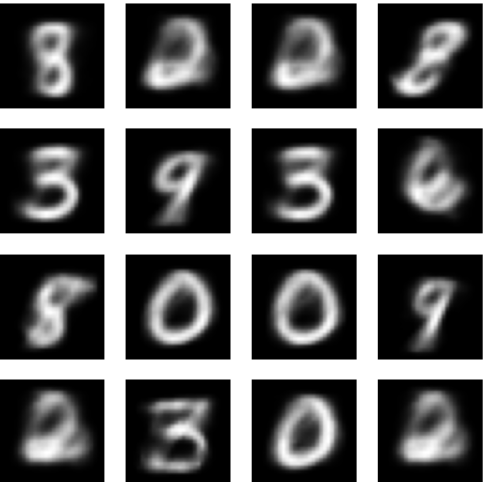
Comparison with Basic Autoencoder: the autoencoder gave blurry and inconsistent images, while VAE generated clear and more realistic images. It occurs because the autoencoder does not constrain its latent space but VAE enforces a continuous and smooth latent distribution.
The latent space of the VAE was visualized by sampling points from a 2D grid and decoding them into images. In the range [-1, 1], the transitions between digits were smooth, and similar digits appeared close to each other In the range [-5, 5], more variation was observed, but extreme values sometimes produced distorted images. This shows that the VAE organizes the latent space in a structured way, where nearby points correspond to similar outputs.
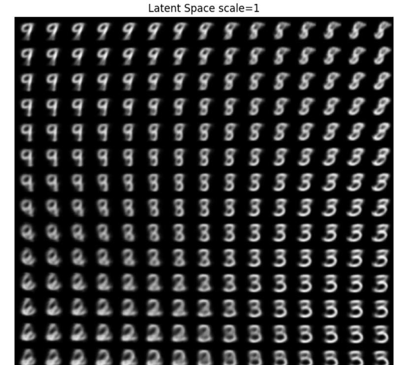
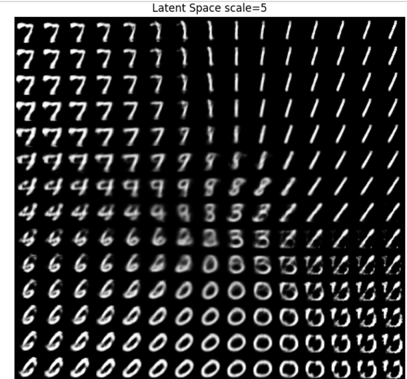
DCGAN was implemented to generate realistic Pokemon images from random noise vectors. The model consists of two neural networks 1)Generator 2)Discriminator Generator maps a random noise vector into a 64×64 RGB image. It is built using transposed convolution layers that progressively upsample the latent vector into an image. Batch normalization and ReLU activation are used to stabilize training and improve convergence. Discriminator is a convolutional neural network that classifies images as real or fake. It progressively downsamples the input image while extracting features for binary classification. Each convolutional block uses batch normalization and LeakyReLU activation to improve gradient flow and avoid the dying ReLU problem. We use LeakyReLU in the discriminator to help the model to learn more stability. After training, we see the loss values and generate sample images to see how well the model learns. LeakyReLU was used in the discriminator to improve training stability by allowing small gradients for negative inputs.
It was monitored using generator and discriminator losses over 20 epochs.
Epoch 1: D=1.0383, G=6.4131 Epoch 2: D=0.3379, G=3.4145 Epoch 3: D=0.4117, G=2.9615 Epoch 4: D=0.2611, G=4.1487 Epoch 5: D=0.2727, G=4.9429 Epoch 6: D=0.4827, G=5.2984 Epoch 7: D=0.2177, G=3.0684 Epoch 8: D=0.1242, G=4.2444 Epoch 9: D=0.5516, G=0.1850 Epoch 10: D=0.0972, G=5.8665 Epoch 11: D=0.0714, G=4.9651 Epoch 12: D=0.0534, G=5.5169 Epoch 13: D=0.0646, G=5.1417 Epoch 14: D=0.0330, G=6.9077 Epoch 15: D=0.2366, G=5.3757 Epoch 16: D=0.0827, G=4.8694 Epoch 17: D=0.3666, G=5.8196 Epoch 18: D=0.0783, G=3.4717 Epoch 19: D=0.1745, G=0.6745 Epoch 20: D=0.0171, G=6.2744
The discriminator loss drops quickly, reaching very low values after a few epochs. The generator loss changes a lot during training, going from low values to high values without a clear pattern. This shows that the discriminator is learning faster than the generator. Around epoch 9, the generator performs better, but then its loss increases again, showing training is unstable. Here, Discriminator dominates the learning process.This is normal in GANs, where the 2 models compete with each other during learning.
Early epochs are noise-like images.
Mid epochs: blurry shapes
Final epochs: partially structure Pokemon -like images
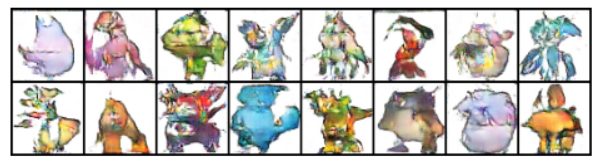
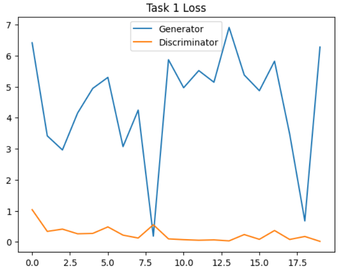
We modify the discriminator by replacing LeakyReLU with standard ReLU while keeping everything else the same. We then train the model again and compare the results with task 1. We record the generator and discriminator losses and save generated images at different epochs. Finally, we analyze how changing the activation function affects training stability and image quality.
Epoch 1: D=0.7218, G=2.8861 Epoch 2: D=0.3457, G=4.4298 Epoch 3: D=0.1605, G=5.1647 Epoch 4: D=0.0274, G=7.1884 Epoch 5: D=0.0639, G=7.8411 Epoch 6: D=0.3965, G=8.6015 Epoch 7: D=0.0486, G=7.6023 Epoch 8: D=0.0475, G=7.6857 Epoch 9: D=0.2063, G=16.1963 Epoch 10: D=0.0166, G=8.7079 Epoch 11: D=0.0152, G=7.1774 Epoch 12: D=0.0004, G=15.5290 Epoch 13: D=0.0883, G=11.2015 Epoch 14: D=0.0094, G=8.2052 Epoch 15: D=0.0040, G=9.2784 Epoch 16: D=0.0133, G=7.7611 Epoch 17: D=0.0084, G=12.0974 Epoch 18: D=0.0169, G=8.8498 Epoch 19: D=0.0869, G=6.7365 Epoch 20: D=0.0029, G=9.8734
ReLU makes the GAN training less stable. The generator loss becomes very high, sometimes above 15, while the discriminator loss quickly drops close to zero. The discriminator is learning too fast and strong compared to the generator. When this happens, the generator cannot learn properly. As a result, the generator cannot learn properly because it does not get useful feedback from the discriminator. As a result, the generator loss keeps going up and down instead of improving smoothly, showing unstable training.
Images: Outputs remain noisy for most epochs. Very limited improvement in structure. Poor convergence compared to task 1.
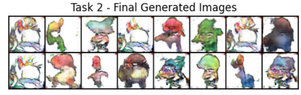
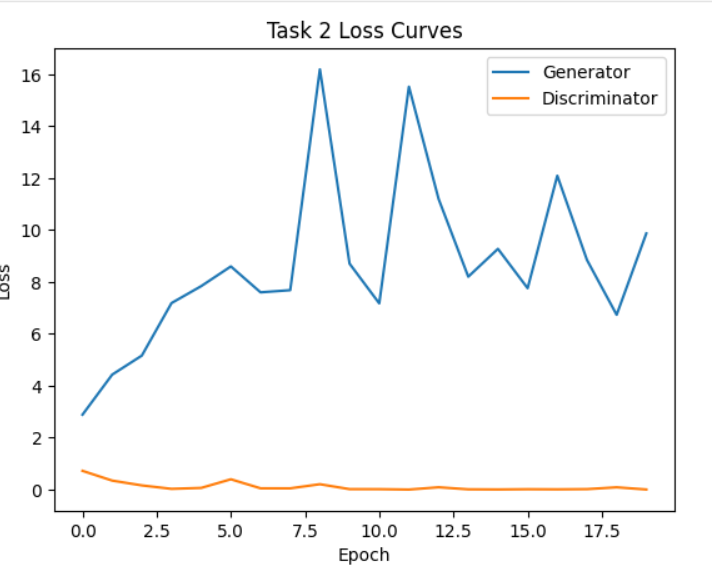
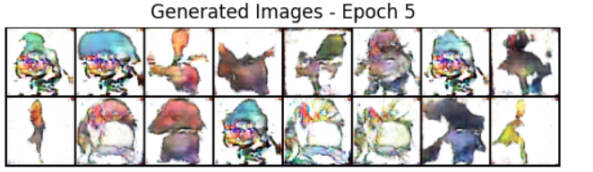
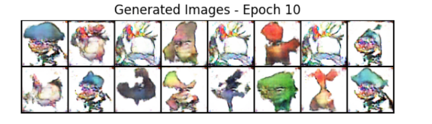
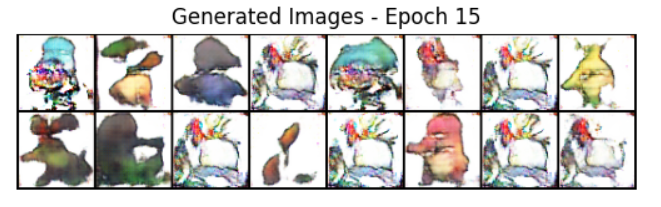
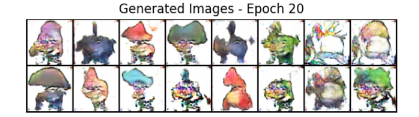
Overall ,this means the model is not balanced. Standard ReLU makes the discriminator dominate the training, which leads to worse learning for the generator and lower quality results. In comparison, Leaky ReLU works better because it still allows small gradients for negative values, which helps the generator learn more effectively and keeps the training more stable.